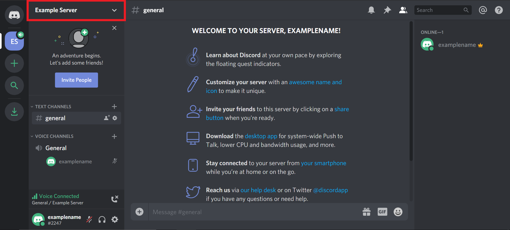
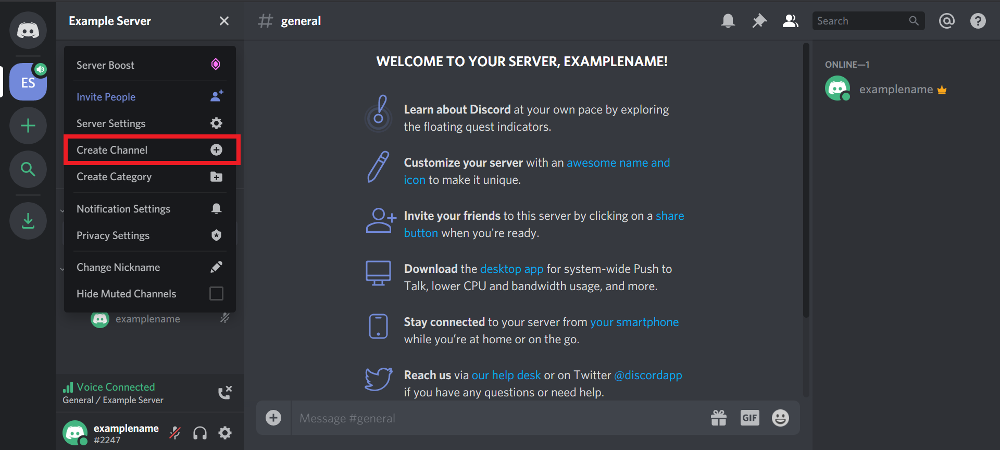
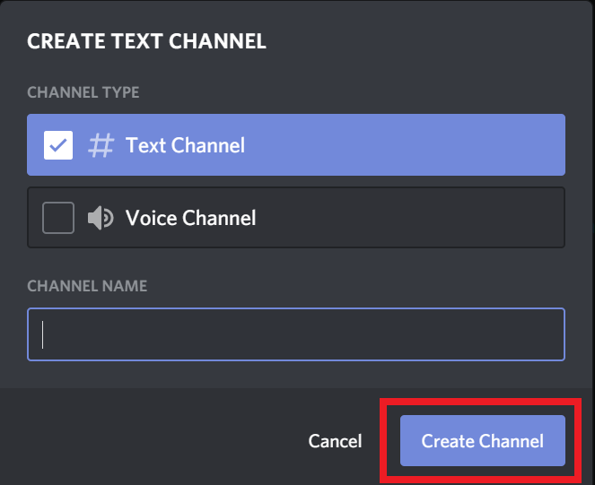

Cyber
HUB
Discord - Manage Server
Step 1 - To create a channel, click on the server name.

Step 2 - From the drop-down menu, select Create Channel.

Step 3 - Then a popup will appear, giving you the option to create a text channel or a voice channel as well as set a name for the channel. Select which type of channel you want to create and enter the channel name.
Step 4 - Next, click Create Channel to finish creating the channel. The channel will then appear on the left side of your homepage.

Step 5 - You will then be taken to the homepage of your new server. A popup will appear with an invite link that you can use to invite other users to your server. For now, click the X to skip this.
Contacts